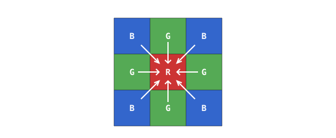

4.11. Debayering¶
Das rohe Bayer-Einzelbild trägt pro Pixel nur einen einzigen Farbkanal. Es in ein normales dreikanaliges RGB-Bild umzuwandeln bedeutet, an jedem Pixel die beiden fehlenden Kanäle aufzufüllen, indem aus benachbarten Pixeln der richtigen Farbe interpoliert wird. Diese Interpolation ist das Debayering (auch Demosaicing genannt). Eine Handvoll Algorithmenfamilien dominiert dabei.
4.11.1. Super-Pixel¶
Der günstigste Ansatz fasst jede 2x2-Bayer-Kachel – eine rote Zelle, eine blaue Zelle und zwei grüne Zellen – zu einem einzigen Ausgabepixel zusammen:
Der rote Kanal ist der Wert der roten Zelle;
der blaue Kanal ist der Wert der blauen Zelle;
der grüne Kanal ist der Durchschnitt der beiden grünen Zellen.
Jede 2x2-Eingabekachel wird zu einem Ausgabepixel, sodass das fertige Bild halb so breit und halb so hoch wie der Sensor ist und ein Viertel der Pixelanzahl hat. Super-Pixel ist schnell und frei von Interpolationsartefakten, doch die Einbuße an Auflösung macht es zur letzten Wahl – es wird selten verwendet.
4.11.2. Bilinear¶
Die bilineare Interpolation mittelt die nächstgelegenen Pixel der richtigen Farbe, statt sie zu kopieren oder zusammenzufassen. Die genaue Mittelung hängt davon ab, welche Farbe das Mittelpixel aufzeichnet, denn die vier Fälle verteilen die fehlenden Kanäle unterschiedlich über die 3x3-Nachbarschaft.
Grünes Pixel in einer Rot-Grün-Zeile. Der fehlende Rotwert mittelt die beiden roten Nachbarn links und rechts; das fehlende Blau mittelt die beiden blauen Nachbarn oberhalb und unterhalb.

Das fehlende Rot stammt von den horizontalen roten Nachbarn; das fehlende Blau von den vertikalen blauen Nachbarn.¶
Grünes Pixel in einer Grün-Blau-Zeile. Dieselbe Form mit vertauschtem Rot und Blau. Der fehlende Rotwert mittelt die beiden roten Nachbarn oberhalb und unterhalb; das fehlende Blau mittelt die beiden blauen Nachbarn links und rechts.

Das fehlende Rot stammt von den vertikalen roten Nachbarn; das fehlende Blau von den horizontalen blauen Nachbarn.¶
Rotes Pixel. Der fehlende Grünwert mittelt die vier kardinalen grünen Nachbarn (oben, unten, links, rechts). Das fehlende Blau mittelt die vier diagonalen blauen Nachbarn.

Das fehlende Grün stammt von den vier kardinalen grünen Nachbarn; das fehlende Blau von den vier diagonalen blauen Nachbarn.¶
Blaues Pixel. Spiegelbild des roten Falls. Das fehlende Grün mittelt die vier kardinalen grünen Nachbarn, und das fehlende Rot mittelt die vier diagonalen roten Nachbarn.

Das fehlende Grün stammt von den vier kardinalen grünen Nachbarn; das fehlende Rot von den vier diagonalen roten Nachbarn.¶
Bilinear behält die volle Auflösung des Sensors und ist für die meisten Anwendungen glatt genug, doch es zeigt an Kanten weiterhin Artefakte. Ein scharfer Übergang zwischen zwei Farben durchquert das Pixelraster in einer bestimmten Ausrichtung, und die Mittelung über die Kante hinweg weicht sie leicht auf. Dort, wo Farb- und Helligkeitskanten nicht exakt zusammenfallen, erscheinen schwache farbige Säume in der Ausgabe.
4.11.3. Über bilinear hinaus¶
Es gibt eine Reihe besserer Debayer-Algorithmen. Manche verwenden größere Nachbarschaften als das kleine Kreuz aus gleichfarbigen Nachbarn der bilinearen Methode und gewichten die Abtastwerte mit sorgfältiger gewählten Koeffizienten; andere erkennen die Richtung lokaler Kanten und richten die Interpolation entlang dieser Richtung aus, sodass eine quer durch das Pixelraster verlaufende Kante scharf bleibt, statt aufzuweichen. Beide Ansätze reduzieren die farbigen Säume und das Kantenaufweichen, das bilinear hinterlässt, zum Preis von mehr Arithmetik pro Pixel und mehr Silizium (oder mehr Rechenaufwand auf MCU-Seite).
Die auf einer bestimmten OpenMV Cam verfügbare Debayer-Qualität ist plattformspezifisch – sie hängt davon ab, was der Sensor und die MCU auf dieser Kamera bereitstellen.
4.11.4. Wo das Debayering läuft¶
Der Image Signal Processor (ISP) – auf dem Sensorchip selbst oder auf MCU-Seite – führt in den meisten Fällen das Debayering jedes Einzelbilds durch, bevor es die Bildverarbeitungs-Pipeline verlässt. Der Benutzercode erhält ein fertiges dreikanaliges RGB-Bild, ohne jemals das rohe Mosaik zu berühren.
Dem ISP kann auch mitgeteilt werden, das rohe Bayer-Einzelbild unverändert durchzuleiten. Rohes Bayer benötigt weniger Speicher als das gedebayerte Bild – ein Byte pro Pixel statt drei – was es nützlich macht, wenn die Einzelbildspeicherung der Engpass ist, wenn für die Offline-Verarbeitung aufgenommen wird oder wenn das Projekt einen eigenen Debayer-Algorithmus in Software anwenden möchte.